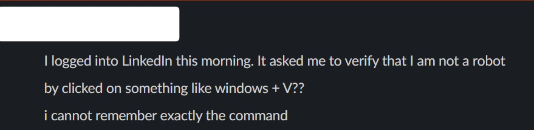

There's a moment most of us have experienced but few of us think about. You're in the middle of a task — drafting an email, solving a problem, navigating somewhere new — and before you've even tried, your hand is already reaching for your phone. LMGT is now LMAIT
It's frictionless. It's instant. And it might be making you dumber.
This isn't a knock against AI because honestly, these tools are genuinely extraordinary and getting more impressive by the minute. Using a tool half named "intelligence" shouldn't come at the cost of our own. Research is suggesting we're sliding, collectively and quietly, toward our intelligence suffering. [1]
When the Atrophied Brain Meets a Real Threat
Imagine someone receives a message on LinkedIn, well don't imagine...this actually happened. It looks legitimate — the branding is right, the tone is professional. It tells them their identity needs to be verified to maintain account access. A small popup instructs them to open their Terminal and paste a command to complete the verification. The command begins with finger — an old Unix utility — pointed at a remote server.
They paste it. They run it. They've just downloaded malware.

This attack is real. The technique is called ClickFix (also known as "paste-and-run"), and it has become one of the fastest-growing cyberattack vectors in the world. In 2025, ClickFix incidents surged over 517%. Microsoft Threat Intelligence tracked campaigns targeting thousands of enterprise and personal devices every single day. Red Canary identified it as the second most popular initial access vector for cyberattacks, trailing only traditional phishing. [7][8]
The attack is devastatingly simple: trick a user into copy-pasting a malicious command into their own Terminal or PowerShell. No exploit needed. No zero-day. Just a person who doesn't stop to...think. [7]
Why does it work? Because of exactly the cognitive patterns we'll be exploring throughout this piece. The user in our LinkedIn example had been trained — by years of stoplights, bikes and animal verifications to comply with verification requests without scrutiny because humans can think, right? They were conditioned to follow instructions, not interrogate them. Technical controls fail when someone doesn't stop and ask "why?" [8]
A sharper, more skeptical mind would have paused. Why would LinkedIn need me to run copy and paste a terminal command? What does finger do? What server is this pointing to? But that kind of instinctive scrutiny — that critical friction — is precisely what atrophies when we outsource our thinking.
The attacker didn't hack the computer. They hacked the human.
The MIT Finding That Should Worry Everyone
In a study at MIT's Media Lab, students were divided into groups based on how much they used AI tools like ChatGPT to complete tasks — including writing essays — over several months. The students who relied exclusively on AI finished their work faster, yes. But they also showed weaker brain connectivity, lower memory retention, and a diminished sense of ownership over their own work. [2]
We've started to outsource our cognitive effort by not doing the hard thinking things and this is making us less intelligent.
This phenomenon has a name: cognitive offloading. It's not new — search engines already changed how we retain information (LMGT or Let Me Google That has showed we're less likely to remember facts we believe we can look up). But AI goes further, LMAIT. It doesn't just store information we could retrieve. It thinks for us, reasons for us, writes for us. The cognitive workout is gone entirely. [3]
A 2025 paper published in Frontiers in Education put it bluntly: are we entering the "dawn of the stupid age," driven by AI companies pushing products to market before we fully understand the psychological and cognitive costs? [4]
The Delegation Feedback Loop
A 2026 paper on arXiv introduced a concept that should give pause to anyone paying attention: the Delegation Feedback Loop. The hypothesis is elegant and alarming. As AI gets more capable, the threshold at which we hand tasks over to it gets lower — extending now to tasks of almost zero cognitive demand. ("Write me a two-sentence reply declining this meeting.") The more we delegate, the less we practice. The less we practice, the less capable we feel. The less capable we feel, the more we delegate. [5]
It's a spiral. And unlike most spirals, it feels comfortable on the way down.
The Carnegie Mellon Warning
In 2025, researchers at Microsoft Research and Carnegie Mellon University published what they described as the first study to directly examine the effects of AI tools on critical thinking in the workplace. Surveying 319 knowledge workers across 936 real-world AI-assisted tasks, they found a clear and troubling signal: higher confidence in GenAI was directly associated with less critical thinking. The inverse was equally true — higher self-confidence was associated with more critical thinking. [6]
The researchers also found that workers with access to GenAI tools produced a less diverse set of outcomes for the same task compared to those working independently — a homogenization they interpreted as a measurable deterioration of critical and reflective judgment. The data shows a shift in cognitive effort: knowledge workers are increasingly moving from task execution to oversight. But oversight without comprehension is just rubber-stamping with extra steps. [6]
"I Can Spot a Fake" — No, You Probably Can't Anymore
Let's address the most dangerous assumption in cybersecurity right now: the confident belief that you can recognize a phishing attack.
For years, the conventional wisdom held up. Bad grammar. Weird sender addresses. Suspicious urgency. Generic greetings. These were the tells, and a trained eye could catch them. Security awareness training was built around this premise — teach people the red flags and they'll stay safe.
That premise is now being systematically dismantled.
IBM X-Force research found that AI can generate highly convincing phishing emails in five minutes, compared to the sixteen hours typically required by an experienced human operator — a 192× improvement in efficiency. Okta's threat intelligence team documented attackers using generative AI to build complete phishing sites in under 30 seconds. [9]
Gone are the days of identifying phishing emails by spelling mistakes or grammar errors. According to threat intelligence data, 67.4% of all phishing attacks in 2024 utilized some form of AI — producing polished, error-free messages tailored to specific industries, roles, and individuals. One cybersecurity researcher found it took just five prompts to instruct ChatGPT to generate targeted phishing emails for specific industry sectors. [10]
The scale shift in late 2025 was the most dramatic signal yet. Hoxhunt analysts found that AI-generated phishing attacks represented under 5% of attacks for most of 2025 — then surged 14x during the holiday season, jumping from 4% to 56% of all reported attacks in December, dropping only slightly to 40% in January. This is not seasonal noise. It is a new baseline. [11]
And critically — Microsoft data shows that AI-assisted phishing now achieves clickthrough rates of 54%, up from an average of 12% for generic phishing. More than half of people who receive a well-crafted AI-generated phishing message click on it. That's not a fringe risk. That's majority failure. [12]
In a peer-reviewed study testing fully AI-automated spear phishing against human subjects, AI-generated attacks performed on par with human expert-crafted attacks and 350% better than a control group. The AI gathered accurate, usable information about targets in 88% of cases. [13]
The LinkedIn terminal-command attack described earlier in this piece is a perfect specimen of this new breed. It isn't a Nigerian prince email. It is contextually appropriate, professionally worded, platform-native, and timed to exploit a moment of low cognitive resistance. The "tells" that trained humans have been conditioned to look for simply aren't there.
We are, in the most literal sense, being outpaced.
So What Does Real Phishing Resistance Look Like?
It starts with accepting that pattern recognition — "does this look suspicious?" — is no longer sufficient. The new fakes don't look suspicious. They look right. Which means the question to train yourself to ask isn't "does this look legitimate?" but "did I initiate this?"
- You never need to run a terminal command to verify your identity. Full stop. No platform — LinkedIn, Google, Microsoft, your bank — will ever ask you to open a command prompt and paste something. If a prompt claims otherwise, that is the attack.
- Urgency is the exploit. Every ClickFix and phishing attack is engineered to create time pressure — to narrow the window between receiving the prompt and questioning it. When you feel rushed, that feeling is the red flag. Slow down. [7]
- Cross-channel verify. If you receive a message claiming to be from a colleague, your bank, or a platform asking you to take action — go to that platform directly through a URL you type yourself, not a link in the message. Call the person on a number you already have. One extra step breaks the entire social engineering chain.
- Train regularly, not once. Security awareness training works when it's continuous and adaptive. AI-driven simulation platforms now track which phishing lures consistently fool employees and ramp up difficulty over time — with one organization reporting employee threat-report rates jumping six-fold in six months. A one-time onboarding module isn't training. It's checkbox theater. [14]
The best defense against AI-powered phishing isn't a better spam filter. It's a mind that hasn't been conditioned into passive compliance — one that still asks why before it acts.
The Intelligence We're Not Training
The uncomfortable truth is that AI literacy and critical thinking aren't the same thing — and we're investing heavily in the former while neglecting the latter.
We're teaching people how to prompt. We're not teaching them when to question.
We're building workflows where AI summarizes, AI drafts, AI recommends, AI decides — and humans approve. But approval without comprehension isn't oversight. It's rubber-stamping. And rubber-stamping at scale, across an entire workforce, across an entire generation, is how you get a civilization that is simultaneously more technologically capable and less individually intelligent.
Researcher Umberto León Domínguez has warned that the intellectual capabilities essential for success in modern life need to be actively stimulated from childhood — especially during adolescence — and that educational systems must ensure young people engage in genuine cognitive effort. Not AI-assisted effort. Effort. [3]
What "Training Yourself" Actually Looks Like
None of this means abandoning AI. It means being strategic about where you use it and where you don't — treating cognitive effort the way an athlete treats physical training.
- Read longer things. Books. Long-form journalism. Research papers. Not summaries of them — the actual things. The discomfort of sustained attention is the whole point.
- Write first drafts yourself. Even badly. Especially badly. The struggle to organize your thoughts is the thinking. Using AI to polish a rough draft is fine. Using AI to replace having thoughts is not.
- Refuse easy answers in your domain of expertise. If you're a software engineer, don't let AI write code you haven't understood. If you're a lawyer, don't let AI analyze a contract you haven't read. Your expertise is the verification layer — and if you stop exercising it, it degrades. [6]
- Practice deliberate skepticism. Before following any instruction you didn't seek out — a popup, a prompt, a message asking you to take an action — stop for three seconds and ask: Who benefits from me doing this? Does this make sense? The LinkedIn-to-Terminal attack works because people don't pause. Pausing is a skill. Practice it. [7][8]
- Use AI as a thinking partner, not a replacement. Ask it to challenge your reasoning. Ask it to steelman the opposing view. Ask it to find the flaw in your argument. This is the difference between a crutch and a sparring partner.
The Confluence, and the Choice
The irony of this moment is profound. We are building machines of extraordinary intelligence while systematically reducing the intelligence of the people using them. The AI gets smarter every six months. The human behind the keyboard may not be. [4][5]
There is a version of this future that works out. It requires treating your mind the way you treat your body — something that requires maintenance, challenge, and deliberate resistance to atrophy. It requires education systems that grade students on process, not output. It requires workplaces that distinguish between AI-assisted productivity and AI-replaced judgment. And it requires individuals who are honest with themselves about which side of that line they're on.
The models will keep training. The question is whether you will too.